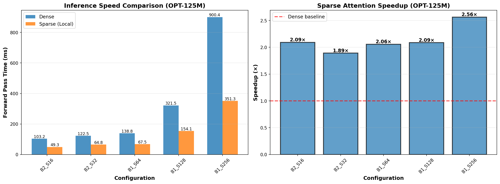

Performance Results
⚡ Inference Speed (Pythia-70M)

Forward pass time comparison across sequence lengths (64→512 tokens)
Speed Improvements
1.9× faster at 64 tokens
2.4× faster at 128 tokens
3.0× faster at 256 tokens
6.8× faster at 512 tokens
⚡ Inference Speed (OPT-125M)

OPT-125M shows even better speedups with larger sequences: 2.56× at 512 tokens